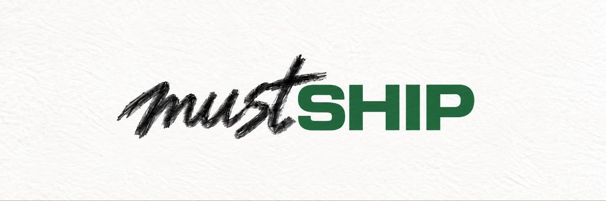
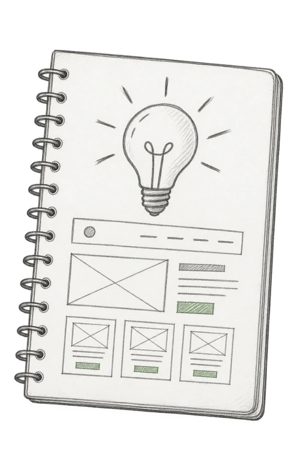
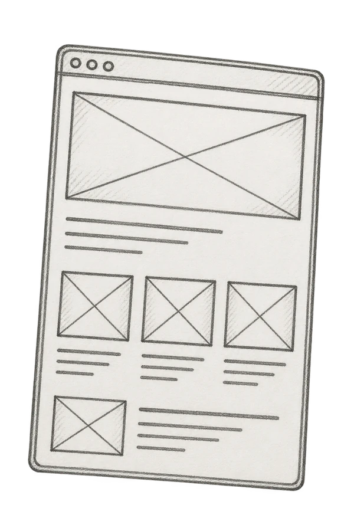
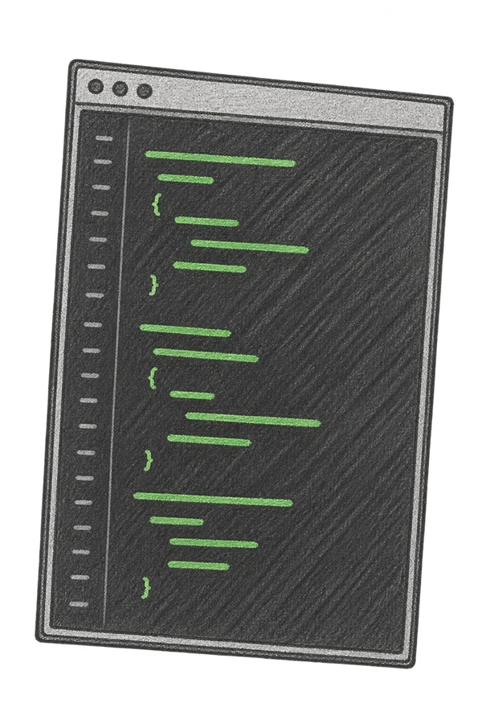
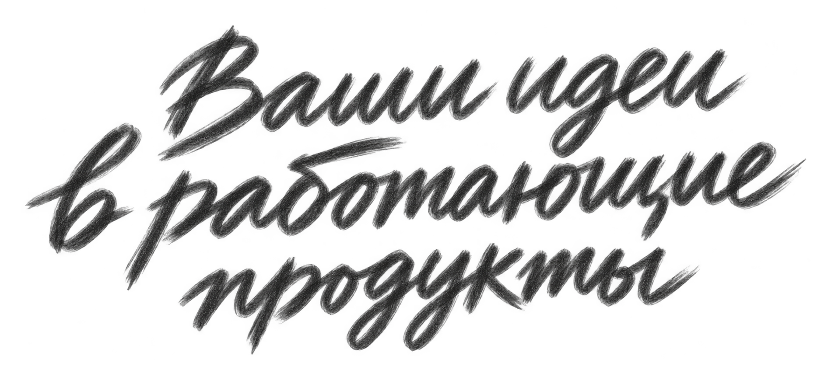

Веб-сервисы
и MVP
Проверьте спрос на первой версии сервиса — прежде чем вкладываться в большой запуск.

Обсудить задачуСоздаём веб-сервисы и автоматизируем рутину,
чтобы команда тратила время на важное.
Берём на себя интерфейсы, разработку
и подключение к вашим системам.

Разбираем задачу
и фиксируем
главное.

Показываем экраны
до начала
разработки.

Пишем код,
связываем системы,
проверяем в деле.
Запускаем сервис
и показываем,
как с ним работать.
Запустить сервис, разгрузить команду или связать системы.
Подбираем решение под вашу задачу.
Проверьте спрос на первой версии сервиса — прежде чем вкладываться в большой запуск.
Заявки, задачи и отчёты в одном окне. Меньше ручного труда и потерянных данных.
CRM, сайт и другие сервисы обмениваются данными. Команде не нужно переносить их вручную.
Помощники и чат-боты берут на себя повторяющиеся вопросы и подготовку ответов.
Разберём, что тормозит работу, и предложим план доработок с понятными приоритетами.
Вот как это работает на практике.
Откройте кейс и посмотрите, что можно применить у вас.
Берегите бюджет,
а не чужие хотелки
Меньше попыток.
Больше пользы.
Сильные промпты.
Без рутины.
Общий язык —
с первой встречи
От резюме —
к собеседованию
Сначала разбираемся в задаче, затем предлагаем решение.
Ценим открытый диалог, внимание к деталям и ответственность за результат.
Продукт и UX/UI
Разбираюсь в задаче бизнеса и пути пользователя. Продумываю сценарии, структуру и интерфейсы, которыми удобно пользоваться.
Разработка и архитектура
Отвечаю за архитектуру и разработку. Руковожу технической командой, связываю системы и довожу сервис до запуска.
Командная разработка
Объединяем опыт в интерфейсах, серверной разработке и интеграциях. Работаем под техническим руководством Михаила — от отдельных задач до целого сервиса.
Расскажите, что хотите запустить или улучшить. Обсудим задачу и предложим, с чего начать.
